Smartsaver: A Power Tracking, Management and Automated Control System
A Capstone and Research Project Presented to the
Faculty of the College of Computer Studies
Dr. Yanga's Colleges, Inc.
Bocaue, Bulacan
In Partial Fulfillment of the Requirements
for the Degree of Bachelor of Science
in Information Technology
By
Amboya, Kenneth E. Carillo, Bianca B. Perez, Jhude Christopher L.
May 2026
Chapter 1 — Project Rationale
Introduction
Energy consumption in the built environment continues to rise as households accumulate more electrically powered devices and rely on them for longer each day. Residential dwellings are a significant and persistently undermonitored contributor to this trend: a single home may run air-conditioning units, electric fans, lighting, entertainment equipment and a growing number of always-on appliances, often simultaneously and frequently in unoccupied rooms. Globally, the buildings and construction sector accounts for a substantial share of total energy demand, and individual households represent a large but individually invisible part of it. In the Philippine context, this challenge is compounded by electricity prices that remain among the highest in Southeast Asia, conditions that make unchecked household energy waste a direct and measurable financial liability for families operating on fixed budgets (Ritchie et al., 2023).
Despite the scale of this problem, the solutions currently available to households present a fundamental practical dilemma. Automated energy control systems that offer comprehensive coverage — such as circuit-level relay switching and hard-wired smart breaker integration — require direct and permanent intervention in a home's existing electrical infrastructure. These installations demand licensed electricians, planned downtime, and capital expenditures that most households cannot justify. On the other end of the spectrum, non-invasive alternatives such as standalone smart plugs and individual current monitoring sensors are affordable and deployable without modification, but they remain isolated devices. They can measure or switch a single outlet, but they lack the automation logic, occupancy awareness, centralized visibility and system-level integration necessary to constitute a functioning energy management solution. Households are therefore left choosing between a system too invasive to implement and a device too limited to be effective.
SmartSaver is a control system designed specifically for the operational realities of the home. Rather than replacing existing infrastructure or relying on isolated smart devices, SmartSaver augments what is already in place. A single Hub node, built on an ESP32 microcontroller, acts as the system's centre: it reads a small set of wired sensors attached directly to its own GPIO pins, communicates wirelessly with low-cost remote modules over Espressif's ESP-NOW protocol, evaluates user-defined automation rules, and serves its own configuration and monitoring interface. Remote control points are modular rather than fixed: each Wireless Module is an ESP32-C3 board flashed with one selectable capability — a relay for switching a load, or a motion sensor for occupancy detection — and is discovered, paired and identified by the Hub without per-unit configuration. Wired sensing covers motion, temperature and humidity, and ambient light; a real-time clock supplies authoritative timestamps; and a buzzer provides a local audible actuator. Every sensor reading and appliance transition is forwarded to a lightweight History Server that converts raw activity into savings figures, and every control decision can be traced to the rule or manual override that produced it — all without permanent modification to any existing electrical component.
In doing so, SmartSaver contributes to three of the United Nations Sustainable Development Goals. It advances SDG 7 (Affordable and Clean Energy) by eliminating avoidable electricity consumption in the home through automated, occupancy-driven appliance control. It supports SDG 9 (Industry, Innovation and Infrastructure) by demonstrating how accessible IoT hardware and open firmware can modernise household energy management without requiring costly infrastructure overhauls. And it aligns with SDG 12 (Responsible Consumption and Production) by embedding real-time accountability into daily household operation, replacing the reactive, habit-dependent model of appliance management with a proactive, sensor-driven system.
Assistive Relevance
Although SmartSaver is evaluated as an energy-management system, its architecture also addresses a practical problem that is not captured by kilowatt-hours: the physical effort of operating a home. For a person with limited mobility, every trip to a switch is a cost — standing up, walking across a room, bending, and returning. For a caregiver, the same appliances are a source of uncertainty when the room is out of sight. The system's manual override, sensor-driven rules and live device-state view apply directly to those situations without requiring a different product.
Two illustrative use cases motivate this framing. An older adult with knee pain can switch a fan or lamp from the dashboard instead of crossing the room, and can leave a motion-triggered rule to handle the appliance when they do move. A caregiver can see whether a room has recent motion and whether an appliance is on, and can use a rule to avoid leaving a load running unattended. These are assistive uses of the same control path, not additional system modules.
The assistive value is deliberately bounded. SmartSaver is not a medical device, does not detect falls or vital signs, does not dispatch emergency services, and does not identify a specific person. Motion is room-level presence inferred from a binary sensor, and the History Server receives telemetry but has no command path back to the Hub. The current version provides local manual control and automation; it does not provide remote control from outside the home or push notifications. The design therefore targets independence and everyday reassurance, not supervision or emergency response.
The architecture can be extended to cover additional sensing needs. Because the module firmware is capability-selectable and the Hub consumes a common registry of parts, a compatible sensor with a corresponding capability implementation could add another detection channel, and a rule could act on it through the existing actuator path. Potential extensions include fall detection, camera- or vision-based activity checks, environmental hazard sensing, and caregiver notification. Each would require more than an added sensor: a signal- or vision-processing pipeline, a notification or dispatch path, privacy review, and — for safety-critical uses — clinical or regulatory validation. These are possibilities of the architecture, not features implemented or validated in this version.
This framing also sets design constraints that are appropriate for assistive use: the relay boots OFF, every automated action can be overridden manually, operation does not depend on a cloud service, no camera or wearable is required, and the dashboard is reached over the home network rather than exposing the Hub directly to the internet. The formal problem statement and objectives of this study remain focused on power tracking, management and control; assistive relevance is an additional interpretation of the same capabilities, not a separate evaluated endpoint.
Review of Related Literature and Studies
This section presents a synthesis of existing literature and studies relevant to the development of SmartSaver. The review is organized thematically to provide a logical foundation for the study's context, hardware design decisions, system architecture, and identification of gaps that SmartSaver aims to address.
Related Literature
Global Energy Crisis and Rising Consumption
This upward trajectory underscores the urgency of practical, household-level energy monitoring. Where large consumers have dedicated facility staff and metering infrastructure, an individual home has neither: consumption is visible only through a monthly bill, and the habit of switching appliances off depends entirely on the occupants remembering. SmartSaver targets that gap directly.
High Energy Consumption in Residential Dwellings
Residential dwellings are among the most significant consumers of energy globally, and an extensive body of work has examined school buildings as a well-instrumented proxy for occupancy-driven consumption in general. Bashir et al. (2024) demonstrated that energy consumption in school buildings contributes significantly to economic, social and environmental sustainability challenges, accounting for approximately 37% of the carbon dioxide emissions associated with energy use in the building sector. Research confirms that building size and air-conditioning capacity are the most impactful variables associated with higher energy consumption. Locally, research conducted within Philippine universities found that the commercial building sector accounts for roughly 10% of total electricity power consumption, with air conditioning alone responsible for the majority of energy use in the surveyed buildings, reaching as high as 51% of total consumption in the surveyed sites. A study on Green ICT practices in the DepEd Koronadal City Division further documented that energy consumption in elementary schools reached 30,000 kWh in the 2021–2022 school year, costing PHP 360,000. These figures establish the substantial energy burden carried by buildings whose occupancy is intermittent and habit-driven, which is the same pattern that produces waste in a home: appliances left running in rooms nobody is using. They reinforce the need for automated monitoring and management systems like SmartSaver.
IoT Microcontrollers: ESP32, Arduino, and Raspberry Pi
These findings collectively validate SmartSaver's architectural decision to deploy the ESP32 as the core microcontroller. The system follows that precedent directly: an ESP32 Dev Module serves as the Hub, and ESP32-C3 boards serve as the remote modules, so the platform choice is consistent across literature and implementation. Unlike the systems reviewed above, SmartSaver does not rely on a cloud broker or a companion single-board computer; all sensing, rule evaluation and actuation supervision are handled on the ESP32 nodes themselves, which keeps the deployment affordable and the system operable without a persistent internet connection.
Non-Invasive Current Sensing: The SCT-013 Split-Core CT Sensor
These technical characteristics establish the SCT-013 as the reference approach for non-invasive current measurement. The present study departs from it deliberately. Current-transformer sensing measures magnitude only, so it cannot identify which appliance produced a given draw; separating individual loads from a room-level aggregate would require additional signal processing that lies outside this project's scope. SmartSaver therefore instruments load state rather than load magnitude: each controlled appliance is switched by a relay module that reports its own resulting state back to the Hub, which yields unambiguous per-appliance operating hours — the exact quantity the savings model requires — without calibration, without analog sampling and at lower cost. The SCT-013 literature remains relevant as the accepted baseline for consumption measurement, but it is retained here as related literature only: the implemented system contains no current sensor and performs no current-based metering.
PIR Sensors for Occupancy Detection in Smart Buildings
Passive infrared (PIR) sensors are among the most widely adopted technologies for occupancy detection in smart building applications. Shokrollahi et al. (2024) conducted a comprehensive literature review covering PIR sensor technology from 2015 to 2023 and concluded that PIR sensors remain among the most practical options for occupancy detection due to their cost-effectiveness, privacy preservation, low processing complexity, and well-established reliability in detecting the presence of occupants in a room.
This body of literature confirms that passive infrared sensing provides a practical, low-cost and sufficiently accurate occupancy detection mechanism. SmartSaver does not use a PIR element; it fills the same occupancy-detection role with a wired RCWL-0516 microwave radar sensor at the Hub, and offers a matching motion capability on a Wireless Module over ESP-NOW. In both cases the signal is reduced to a binary detected/clear state, which is the representation the reviewed studies identify as sufficient for occupancy-triggered automation and is precisely what the system's rule engine consumes. Because occupancy is inferred from motion rather than from a counting sensor, the system treats sustained absence of motion as the trigger condition, consistent with the conservative behaviour recommended in the literature for automating household loads.
Infrared Transmitters and Receivers for Appliance Control
Infrared (IR) communication is a well-established, non-invasive method for controlling consumer electronics, particularly air conditioning units, which are equipped with IR remote receivers as a standard feature. The core principle involves recording the proprietary IR signal codes emitted by an existing remote control using an IR receiver module, and subsequently replaying those captured codes via an IR LED transmitter to command the target appliance effectively making the microcontroller a programmable virtual remote. Kaur et al. (2024) demonstrated this approach in a remote-controlled appliance system using IR communication, confirming that signal capture and replay is a practical and cost-effective method for integrating IR-controlled appliances into IoT automation systems without requiring access to the appliance's internal circuitry. Shrivastav (2021) further validated an ESP32-based home automation system that incorporated IR-based remote control alongside relay and manual switching, demonstrating that the ESP32 platform is capable of handling IR signal decoding and transmission concurrently with other sensor-processing tasks. For HVAC control, this is the most direct non-invasive route.
The present implementation does not yet exercise this mechanism. Infrared control is preserved in the system's capability model as a reserved actuator type: the firmware reserves an identification slot and a scaffolded driver for an IR emitter module, and the parts registry, protocol and database all already accommodate such a device, but no infrared encoding, code capture or replay is implemented in this version. Where the reviewed systems rely on infrared to reach appliances whose internal wiring must not be touched, SmartSaver reaches an equivalent end through switched load control instead. The infrared pathway is documented in this review because it defines the extension route for air-conditioning control, which is the appliance class most resistant to relay switching and therefore the most valuable target for a future release.
Servo Motors as Actuators in IoT Automation Systems
This study does not implement servo-based actuation, and the omission is a deliberate scoping decision rather than an oversight. A clamp-on servo that physically depresses an existing wall switch is mechanically elegant, but it introduces moving parts at every control point, requires per-switch mechanical fitting and calibration, and creates a failure mode in which an unsupervised actuator can leave a switch in an indeterminate position. SmartSaver instead places a relay module in line with the load it controls, which produces the same functional outcome — a load that can be switched without any modification to the room's wiring or fixtures — while reporting a definite state, consuming no mechanism and costing less. The servo capability identifier remains reserved in the firmware for future mechanical actuation where a load cannot be relay-switched.
ESP-NOW Protocol for Low-Latency IoT Sensor Networks
SmartSaver adopts ESP-NOW exactly where the reviewed literature places it: on the wireless link between the remote modules and the Hub. The protocol's connectionless, low-latency and low-overhead characteristics suit the system's traffic pattern, which consists of short, frequent state reports from a handful of nodes. A module starts with no configured channel and performs a bounded 1–11 sweep to find the Hub (the verified bench path); a build-time fixed channel is retained as a fallback for a deployment with a known, stable channel. ESP-NOW broadcast discovery frames are unencrypted because ESP-NOW cannot encrypt a multicast peer, so this build runs without link-layer encryption; the pre-shared and local master keys remain defined but disabled. Telemetry destined for the History Server travels over ordinary Wi-Fi and HTTPS with a shared-key header rather than through an MQTT broker, which removes an external service dependency from the deployment.
Related Studies
Benefits of Implementing IoT-Based Energy Management Solutions
A growing body of empirical research demonstrates that IoT-based energy management systems deliver measurable and significant improvements across economic, operational, and environmental dimensions. A longitudinal study conducted over 24 months from January 2022 to December 2023 analyzed IoT-based energy
These documented outcomes — reduced consumption, faster response times and lower operating costs — align directly with SmartSaver's objectives. The residential figure is the more relevant precedent: a household-scale deployment of monitoring and automated control produced a measurable reduction in consumption, which is precisely the outcome SmartSaver targets for a single dwelling.
IoT-Based Power Management and Control Systems
Multiple studies have demonstrated practical implementations of IoT systems for real-time power monitoring and automated appliance control across institutional and residential settings. Moreno et al. (2022) designed and tested an IoT platform for a university campus across three distinct room types an office, a classroom, and a laboratory integrating low-cost open-source IoT hardware to collect energy consumption data, store it in a database, and visualize it through a centralized dashboard, achieving minimized power consumption costs while maintaining occupant comfort. A separate implementation by Kalinga et al. (2023) presented a cognitive IoT-based framework for efficient electrical energy consumption in public higher learning institutions, deploying sensor networks and automation logic to reduce institutional energy waste. At a smaller scale, a real-time energy monitoring and automation system by Grenze researchers (2025) combined an ESP32 with an ACS712 current sensor and PIR occupancy detection to automate lighting based on room presence and transmit the readings to a central dashboard.
These implementations collectively demonstrate that the architecture SmartSaver adopts — distributed sensor nodes, a coordinating hub, a centralized data store and rule-based automation — is well validated across diverse deployment contexts. SmartSaver follows that pattern while differing in two deliberate respects: it evaluates automation rules on the hub itself rather than in a cloud backend, so the system continues to control appliances when the network is down, and it stores its history in a single relational file rather than in a managed time-series service, which keeps the deployment to one process on one host.
Limitations of Intrusive Energy Monitoring Solutions
SmartSaver addresses these limitations at their root: it does not attempt appliance-level power metering at all. Instead of installing a sensor or smart plug at every device, it instruments only the loads it actually controls, using relay modules placed in line with those loads to switch them and to report their resulting state. Each controlled appliance therefore yields unambiguous operating hours without a current sensor, without an outlet replacement and without any modification to the room's fixed wiring. The intrusive hardware the reviewed literature criticises — smart plugs at every outlet, per-appliance meters, and direct line modifications for metering — is avoided entirely, which removes both the capital cost and the administrative barrier that make such deployments impractical in Philippine schools.
Energy Wastage in Unoccupied Rooms
Human negligence in switching off electrical appliances after leaving a room is a consistently documented source of avoidable energy waste, and the behaviour is the same whether the room is a classroom or a bedroom. Leong et al. (2024) observed that such wastage regularly occurs when the last occupant of a room forgets to switch off lighting and other electrical loads, and quantified that careless occupant behaviour can influence the energy efficiency of a building by up to one-third. The study emphasised that autonomous energy-saving mechanisms are necessary to overcome this recurring behavioural failure — a conclusion that applies with equal force to a household, where no caretaker exists to notice afterwards. Further work on room-level energy management found that buildings with many intermittently used rooms face persistent vacancy events, causing lights, fans and air conditioning to operate in empty spaces and generating avoidable costs. In the Philippine context, Pelaez et al. (2025) documented a school division consuming 30,000 kWh in a single school year at a cost of PHP 360,000, with evidence pointing to operational inefficiency and a lack of energy-saving automation as contributing factors. These studies collectively establish that the behavioural and operational gap SmartSaver targets — appliances left running in unoccupied rooms — is well documented, widespread and quantifiable.
IoT Deployment in Residential and Building Environments
Beyond single-room implementations, a growing body of research has addressed the deployment of IoT systems across multiple rooms and entire buildings. Moreno et al. (2022) designed a scalable IoT monitoring platform tested across office, room and laboratory settings and demonstrated the platform's ability to provide building-level and room-level energy visibility through low-cost open-source hardware with MQTT as the messaging layer.
These multi-room, campus-scale studies validate SmartSaver's design philosophy of deploying modular, room-level ESP32 nodes that report to a centralized service, enabling institution-wide visibility without a site-wide electrical infrastructure overhaul. SmartSaver's own history server plays the role those studies assign to a cloud dashboard, while the rule evaluation the studies place in the backend is performed on the hub instead, so that each room remains automated even if the central service is unavailable.
Synthesis
The hardware components that constitute SmartSaver's device layer — the ESP32 and ESP32-C3 microcontrollers, the RCWL-0516 microwave motion sensor, the DHT11 temperature and humidity sensor, the LM393 photoresistor comparator module, the DS3231 real-time clock, the active buzzer and the relay modules — are each individually validated by peer-reviewed literature as reliable, low-cost and appropriate for distributed IoT deployments, and the ESP32 in particular is confirmed as well suited to continuous telemetry. The ESP-NOW protocol is confirmed as the appropriate choice for the short, frequent, low-latency traffic between the modules and the hub. Empirical studies on IoT-based power management systems demonstrate consistent, measurable reductions in energy consumption across institutional contexts, directly supporting the expected impact of SmartSaver's deployment. Where this study departs from the reviewed designs — state-based rather than current-based accounting, and relay rather than infrared or servo actuation — the departure is argued in the corresponding sections above rather than left implicit.
The reviewed studies on the limitations of intrusive solutions — smart plugs, direct-wiring meters and appliance replacement — establish the specific gap that SmartSaver fills: a non-invasive, cost-appropriate system deployable in a Philippine home without permanent electrical modification. Research on room-level energy waste confirms that human negligence is a persistent and quantifiable driver of unnecessary consumption, and that occupancy-based automation is the most effective technical countermeasure. Finally, multi-room IoT deployment studies validate SmartSaver's modular, room-node architecture as a scalable approach to whole-home energy management. Together, these works establish that SmartSaver is not only technically feasible but represents a well-grounded advancement over the current state of practice in household energy management.
Statement of the Problem
Households continue to face persistent energy waste due to the absence of an integrated, non-invasive system capable of tracking, monitoring and controlling power consumption at the room level. Current practice relies on the occupants remembering to switch appliances off, resulting in extended periods where devices remain active in unoccupied spaces with no automatic mechanism to detect or resolve the waste. While energy control solutions exist, they are either too invasive for a typical home or too limited in scope to constitute a complete management system.
This study aims to design, develop and evaluate an IoT-based power tracking, monitoring and control system that improves the overall efficiency of a home's power usage.
General Problem
How can an IoT-based power tracking, monitoring and control system be designed, developed and evaluated to improve the overall efficiency of a home's power usage?
Specific Problem
How can an IoT-based power tracking, monitoring and control system be developed to improve a home's power usage efficiency through wireless, room-level detection of active appliances in unoccupied spaces and automated control of those appliances through user-defined rules, without permanent modification to the home's electrical installation?
How can the system be designed and implemented to ensure that household occupants can configure and operate it safely, and that control of the home's appliances is protected from unauthorised access?
How can the system provide efficient and user-friendly processes for power tracking, management, and control including schedule encoding, usage monitoring, home management, and device management?
What is the level of user acceptance of the developed system in terms of Perceived Ease of Use (PEOU) and Perceived Usefulness (PU)?
Is there a significant relationship between Perceived Ease of Use (PEOU) and Perceived Usefulness (PU) in influencing users' acceptance of the system?
How does the system perform based on the ISO/IEC 25010:2023 software quality model in terms of Functional Suitability, Performance Efficiency, Usability, Reliability, Security, Compatibility, Maintainability, and Portability?
Based on the evaluation results, is the developed power tracking, monitoring and control system acceptable, efficient and suitable for installation in a household?
Objectives of the Study
General Objective
This study aims to design, develop and evaluate an IoT-based power tracking, monitoring and control system that improves the overall efficiency of a home's power usage.
Specific Objective
To develop an IoT-based power tracking, monitoring and control system capable of improving a home's power usage efficiency through a wireless hub-and-module architecture that autonomously discovers, pairs with and supervises modular sensing and switching nodes, evaluates user-defined automation rules against live sensor and schedule data, and executes appliance control without permanent modification of the home's electrical installation.
To design and implement a system that protects configuration and control of the home's appliances through a password-protected interface and an authenticated link between the hub and its history server.
To develop an efficient and user-friendly system that supports the key home management processes of automated rule configuration, per-device pairing and identification, manual override of automation, live device-state monitoring, and historical savings reporting.
To determine the level of user acceptance of the developed system in terms of Perceived Ease of Use (PEOU) and Perceived Usefulness (PU).
To determine if there is a significant relationship between Perceived Ease of Use (PEOU) and Perceived Usefulness (PU) in influencing users' acceptance of the system.
To evaluate the system based on the ISO/IEC 25010:2023 software quality model in terms of Functional Suitability, Performance Efficiency, Usability, Reliability, Security, Compatibility, Maintainability, and Portability.
To determine the overall acceptability, efficiency, and suitability of the developed power tracking, monitoring, and control system based on the evaluation results.
Scopes and Delimitation
Scope
SmartSaver is an IoT-based power tracking, monitoring and control system designed for home use, consisting of the following modules:
User Management Module
Defines the system's single-user ownership model. The household occupant sets the dashboard credentials during captive-portal setup and is the only user of the Hub dashboard. No multiple roles, separate accounts or per-user permissions are implemented: the system is designed for a single household, so responsibility for configuration and control rests with the occupant.
Authentication Module
Verifies the dashboard login credentials entered during setup, issues the short-lived session token used by the dashboard's HTTP API and WebSocket, and authenticates the Hub to the History Server with the shared API key. The system is designed for a single household, so responsibility for configuration and control rests with the occupant rather than being distributed across organisational roles.
IoT Home Tracking Module
Serves as the system's sensing foundation, monitoring room-level occupancy through a wired motion sensor and reading temperature, humidity and ambient light through wired sensors attached to the Hub, while remote Wireless Modules report the state of the loads they switch.
IoT Home Monitoring Module
Builds on the tracking layer by continuously collecting and evaluating sensor readings and actuator state reports, both from the Hub's own wired parts and from paired Wireless Modules over ESP-NOW, and by forwarding every reading, appliance transition and topology change to the History Server for durable storage when one is configured.
Automated Control Module
Acts on the data surfaced by the monitoring layer, executing automated appliance control whenever a user-defined rule's trigger condition is met. Rules may be driven by time of day, by a wired or wireless sensor threshold, or by an appliance's reported state, and may command a relay module to switch a load, a buzzer to sound, or a remote module to change state. Overlapping rules are resolved by a defined priority order so that exactly one command is issued per target, and any automated action can be overridden manually for a bounded period.
Reporting Module
Presents savings in hours, kilowatt-hours and currency, supported by a per-appliance breakdown and a payback-progress figure derived from the owner's declared hardware and hosting cost. Reporting is intended for the household occupant's own review.
Analytics Module
Provides data visualization of historical energy usage and system health, including summary and per-appliance savings for selectable periods, daily savings trends, sensor readings plotted over time, and reliability indicators covering Hub uptime, sensor staleness and wireless module presence. A separate advisory panel surfaces potential savings identified from sensor context without mixing that estimate into the reported actual savings.
Delimitation
The study does not include advanced functionalities such as AI-based predictive analytics or automated decision-making beyond rule-based automation logic. The system is limited to the core functions identified in the scope: room-level occupancy and environmental sensing, appliance state monitoring, rule-based automated control, manual override, and savings reporting. Savings are computed from appliance operating hours and user-declared baselines rather than from measured electrical consumption, so the system does not perform true power metering and does not claim revenue-grade accuracy.
The system does not support integration with external platforms such as utility provider APIs, smart-meter systems or third-party home-automation platforms. It operates as a standalone IoT-based energy monitoring and control system designed for the internal use of a single household.
System development, testing and evaluation will involve the household occupants as respondents, together with individuals who are not members of the household for the usability portion of the evaluation. Results will be limited to the specific rooms and appliances covered by the test deployment.
The study involves the use of IoT hardware components including ESP32 and ESP32-C3 microcontrollers, a digital real-time clock, a microwave motion sensor, a temperature and humidity sensor, an LM393 photoresistor comparator module for light sensing, an active buzzer, and relay modules. It does not include the development of custom-manufactured hardware or specialised industrial-grade electrical devices. All components used are commercially available off-the-shelf modules. Electrical work is limited to low-voltage direct-current breadboard and prototype assemblies; the system does not perform mains wiring, does not measure mains current, and does not switch mains voltage in this version.
The system implements basic to intermediate security mechanisms: a password-protected dashboard session for the Hub's own interface, a shared-secret API key that authenticates the Hub to the History Server, and HTTPS for Hub-to-server posts. Wireless module traffic is currently unencrypted because ESP-NOW cannot encrypt the broadcast discovery frames on which pairing depends; the pre-shared and local master keys remain defined but disabled, and this is recorded as a limitation. Advanced security features such as multi-factor authentication, biometric verification, per-user accounts on the History Server, and a login for the History Server dashboard are not included in the current version. The Hub's own dashboard is served over HTTP on the home LAN, and the History Server dashboard relies on network placement rather than authentication for access control.
The assistive interpretation of the system is also delimited. SmartSaver is not a medical device and does not provide fall detection, vital-sign monitoring, emergency dispatch, or child supervision. Its motion signal is room-level presence, not person identification, and it has no camera, microphone, or wearable. The current version provides manual control and automation only on the home network; it does not provide remote control from outside the home or push notifications to a caregiver. These omissions are deliberate: the system is positioned as an independence and everyday-reassurance tool, and an assistive claim beyond that would exceed what the hardware and software can verify.
The implemented hardware set is constrained by the project's financial budget. Only the wired sensors assembled for the prototype (RTC, motion, climate and light) and the wireless capabilities built for this version (switch and motion) are included and tested. The module firmware is nevertheless capability-selectable: each capability_*.cpp file implements one sensor or actuator behind a compile-time selector, while discovery, pairing, identity assignment, state reporting and the Hub's registry are shared across capabilities. Additional sensor types can therefore be added without changing the Hub-to-module pairing model, by adding a capability implementation and, where the new reading is not already represented, extending the protocol payload and History Server schema. Supporting more sensors is an architectural capability of the current design, not a claim that every such sensor has been built or evaluated here.
The system is intended primarily for domestic use, with academic evaluation of the prototype.
Theoretical Framework
This study on SmartSaver: A Power Tracking, Management and Automated Control System for the Home is anchored on five theoretical and evaluation frameworks that explain system automation, human behavioural limitations in household management, engineering control design, user acceptance, and software quality evaluation.
Marginal Gains Theory
Marginal Gains Theory holds that a large outcome can be produced by aggregating many small, individually modest improvements rather than by one large intervention (Patel, 2015). In SmartSaver this maps directly to per-appliance accounting: each automated switch-off avoids a small amount of appliance runtime, and the savings model sums those avoided hours across appliances and days. The theory therefore supplies the rationale for the system's room-by-room, appliance-by-appliance approach: no single avoided hour is significant, but the accumulated total is what appears as a measurable reduction in the household's electricity consumption.
Bounded Rationality Theory
The second is the Bounded Rationality Theory by Steele and Stefánsson (2023), which explains how human decision-making is limited by information availability and cognitive constraints. This theory is directly relevant to SmartSaver because the existing manual approach to household appliance management depends entirely on occupants remembering to act, often while leaving a room or the house. SmartSaver reduces that reliance by automating energy tracking and control, overcoming the limitations of bounded rationality in the home and removing human forgetfulness as a contributing factor to energy waste.
Control Theory – Closed-Loop Systems Principle
The third is Control Theory's Closed-Loop Systems Principle by Ogata (2010), which provides the engineering foundation for SmartSaver's automation logic. Unlike open-loop systems that execute actions without feedback, a closed-loop system continuously monitors its environment and adjusts its output to maintain a desired state. SmartSaver embodies this principle directly in two nested loops. The outer loop is the automation engine: wired and wireless sensors report occupancy, temperature, humidity and light; a real-time clock establishes when a rule's time condition is met; and when a rule's trigger is satisfied the system dispatches the corrective output — a switch command to a relay module or a buzzer activation — to restore the intended state of the room. The inner loop is the actuator confirmation: every wireless actuator that receives a command reports its resulting state back as an ordinary reading, so the Hub observes what the relay actually did instead of assuming the command succeeded. The wired buzzer has no feedback path, so its actuation is recorded open-loop. The returned wireless state is what the savings model later integrates, which is why a relay that fails to switch is visible rather than silently counted as saved energy.
Technology Acceptance Model (TAM)
The fourth is the Technology Acceptance Model (TAM) by Davis (1989), which explains user acceptance of technology based on two key constructs: Perceived Ease of Use (PEOU) and Perceived Usefulness (PU). PEOU refers to the degree to which users believe the system is easy to use, while PU refers to the degree to which users believe it improves their performance. In this study, TAM is used to evaluate how household occupants perceive and accept SmartSaver, whether its ease of use influences its perceived usefulness, and whether that acceptance extends to a positive attitude toward the system and an intention to keep using it at home.
ISO/IEC 25010:2023 Software Quality Module
The fifth is the ISO/IEC 25010:2023 Software Quality Model, which provides a standardized framework for evaluating system and software quality based on measurable characteristics. The quality characteristics relevant to SmartSaver include Functional Suitability, Performance Efficiency, Reliability, Usability, Security, Compatibility, Maintainability, and Portability. This model is applied in this study to systematically assess whether SmartSaver meets the quality standards expected of a consumer-grade product, ensuring that the system not only functions correctly but also performs efficiently, remains reliable under continuous operation, and can be maintained and extended as the household's needs change over time.
Conceptual Framework
The inputs consist of readings from the wired sensors attached to the Hub — motion, temperature and humidity, and ambient light — together with actuator state reports arriving over ESP-NOW from paired Wireless Modules, the automation rules configured by the household occupant through the Hub's own dashboard, and the per-appliance power ratings, baseline behaviour and tariff rate configured on the History Server. A real-time clock on the Hub supplies the authoritative timestamp applied to every event.
The process begins with the Hub sampling its wired sensors on a fixed cadence and applying a median-and-hysteresis filter so that a single spurious sample cannot trigger automation. Remote modules, which hold no stored identity, sweep the 1–11 channels to find the Hub, announce themselves, and are paired and assigned an identifier; a build-time fixed channel is retained as an optional fallback. Once paired, every filtered reading and every actuator state change is evaluated against the configured rules, where priority resolution guarantees that only one command is issued per target when several rules overlap. Commands are dispatched over ESP-NOW to wireless actuators or applied locally to wired ones; wireless actuators confirm their resulting state, the wired buzzer is open-loop, and every event is posted to the History Server when one is configured. The server stores those events and recomputes savings, reliability and data-quality indicators.
The outputs are threefold: automated appliance control as the primary intervention, a real-time dashboard on the Hub showing room state, paired modules, active rules and override status, and a History Server dashboard presenting savings in hours, kilowatt-hours and currency, together with a per-appliance breakdown, a payback-progress figure, system-health indicators and trend charts.
The feedback component operates at two levels. Internally, every wireless actuator reports its resulting state so the system observes the effect of its own commands rather than assuming it, while the wired buzzer remains open-loop; the sensor filter suppresses transient noise before it reaches the automation engine. Externally, the History Server's reliability and data-quality indicators — Hub uptime, sensor staleness, wireless module presence, and the proportion of actuators still lacking configuration — surface degradation that would otherwise be invisible, while user acceptance and software quality evaluation results are used to refine rule thresholds, dashboard usability and reporting content.
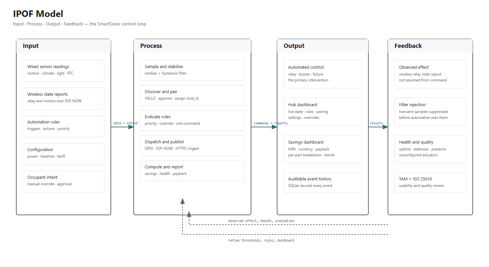
Hypothesis of the Study
The SmartSaver system does not have a significant effect on reducing energy waste and does not meaningfully improve response time compared to the existing manual monitoring approach.
The SmartSaver system has a significant effect on reducing energy waste and meaningfully improves response time by automating appliance control according to user-defined rules evaluated against live sensor data, time of day, and the reported state of the appliances themselves.
Chapter 2 — System Development and Methodology
This chapter presents the methods and tools used in the development of the IoT-Based Energy Monitoring and Management System. It covers the processes involved in requirements analysis, system design, implementation, testing, and deployment, as well as the system’s architecture, data flow, and workflow. The researcher aimed to create the system by developing a series of prototypes and testing them to fit the user requirements.
System Development Methodology
The study employs the Iterative Waterfall Model, a hybrid Software Development Life Cycle (SDLC) framework that integrates the structured, sequential phases of the traditional waterfall with the adaptability of iterative refinement. In this model, development progresses through the standard stages requirements analysis, design, implementation, testing, and deployment but unlike the rigid waterfall, it allows feedback loops that enable revisiting earlier phases when adjustments are necessary. This ensures that the process remains systematic while still accommodating improvements based on evaluation results.
This methodology was selected because it aligns with the dual demands of the project. On one hand, the embedded components — sensor sampling, radio channel configuration, pairing and actuation timing — require a strict, linear validation process to guarantee that a node behaves deterministically before it is trusted in a live room. On the other hand, the software aspects, particularly the automation rule engine, the Hub dashboard and the History Server's savings model, benefit from iterative refinement to address evolving user requirements and to correct assumptions exposed by testing. By adopting this approach, the researchers maintained discipline in validating critical embedded functions while retaining the flexibility to refine rule logic, adjust thresholds and improve data handling whenever inefficiencies or new needs surfaced during testing.
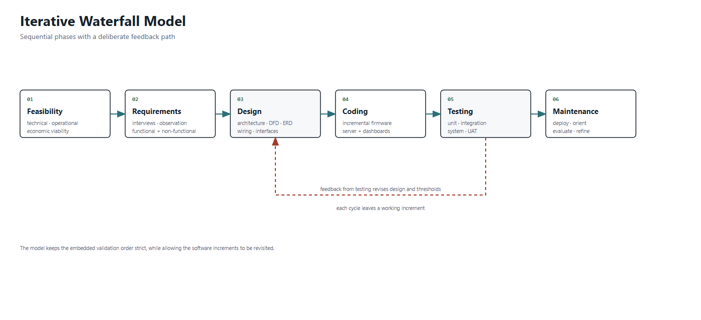
The system development process follows several iterative phases.
In the Feasibility Study Phase, the researchers assessed the viability of the proposed system across three dimensions — technical, operational and economic — to confirm that SmartSaver could realistically be developed and deployed within the constraints of a typical household before committing to full development.
In the Requirements Analysis Phase, the researchers gathered and analysed data on the household's existing manual appliance management practice through interviews with the occupants and observation of the home's daily routine. Both functional and non-functional requirements were identified and documented, and the researchers worked with the occupants to prioritise system features and establish the scope of the proposed solution.
In the Design Phase, the researchers developed the overall system architecture, data model and interface design. Context and level-one Data Flow Diagrams, an Entity-Relationship Diagram for the History Server's relational store, the ESP-NOW packet structure shared between the Hub and the modules, hardware wiring references for the Hub and each module variant (Figures 2.17–2.21), and interface layouts for both the Hub's own dashboard and the History Server's savings dashboard were produced to serve as the blueprint for development.
In the Coding Phase, the researchers implemented the system through incremental development of its modules. Hub firmware was developed in the Arduino IDE 2 environment against the Espressif ESP32 core, covering the wired sensor drivers, the ESP-NOW transport with 1–11 channel-hop discovery (and an optional fixed-channel fallback), the pairing protocol, the rule engine together with persistent rule storage, manual override handling, and the embedded web dashboard with its configuration captive portal. Module firmware was developed as a single reusable core with a compile-time capability selector, so the same source produces either a relay-switching module or a motion-sensing module. The History Server was developed in parallel as a dependency-free Python service, with each increment — ingest and schema, the savings model, the dashboard, the reliability and data-quality metrics, and the cost-of-ownership model — left functional at the end of every cycle.
In the Testing Phase, the researchers perform continuous testing including unit, integration, system and user acceptance testing to identify and resolve errors while ensuring the performance, reliability and usability of the system. Particular attention is given to validating the reliability of module pairing, the correctness of rule evaluation and conflict resolution when several rules target the same appliance, the accuracy of actuator state confirmation, and the correctness of the savings computation against worked examples.
In the Maintenance Phase, the system will be deployed in the target household in a phased rollout beginning with a single room before expanding to the remaining rooms. Orientation will be conducted with the household occupants, and the TAM and ISO/IEC 25010:2023 evaluation instruments will be administered to assess the system's acceptability, efficiency and suitability for continued domestic use. Feedback gathered during this phase will inform final refinements to rule defaults, dashboard usability and reporting content.
Requirements Analysis
The functional requirements of the system emphasise its ability to gather and interpret data from sensing devices, evaluate that data against user-defined automation rules, and control appliances accordingly. The Hub reads wired motion, climate and light sensors, maintains an authoritative clock, and supervises a set of remote Wireless Modules over ESP-NOW. Each module is discovered automatically, paired with the Hub, and assigned an identifier, after which it either reports a sensed condition or accepts a switch command and reports the resulting state. Rules are configured through the Hub's own dashboard and may be triggered by time, by a sensor threshold, or by another appliance's state; when several rules target the same appliance, a defined priority order determines which one acts. Any automated behaviour can be overridden manually for a bounded period. Every reading, appliance transition and topology change is forwarded to the History Server when one is configured, where it is stored and used to compute savings, reliability and data-quality indicators.
On the non-functional side, the system is designed to comply with ISO/IEC 25010, focusing on Functional Suitability, Performance Efficiency, Reliability and Usability. The framework also aligns with the Technology Acceptance Model (TAM) by prioritising Perceived Ease of Use (PEOU) and Perceived Usefulness (PU) to encourage adoption by ordinary household users who have no technical background.
The development began with a comprehensive Requirements Analysis translating user needs into system specifications. Requirements were gathered through interviews with the occupants and observation of existing appliance-management habits. Primary user requirements include real-time device monitoring, automated appliance control, and a dashboard the occupant can understand without technical training.
From a system perspective, the requirements extend to integrating telemetry over ESP-NOW, maintaining a registry of known parts and their capabilities, persisting automation rules across reboots, supervising actuator state confirmation, and providing a reliable data pipeline from the Hub to the History Server that degrades gracefully when the server is unreachable. The system deliberately does not require an external message broker or a managed time-series database: the History Server is a self-contained service backed by a single SQLite file, which keeps the deployment to one host and one process.
Existing System
The existing process for managing household appliances is entirely manual. There is no software, no sensors and no automation of any kind. The household relies solely on the occupants remembering to switch appliances off when they leave a room or the house. This is inconsistently followed, particularly for loads that give no immediate feedback such as fans, lighting or an air-conditioning unit left running in an unused bedroom. When waste is eventually noticed, someone has to walk through the house and switch the appliances off by hand. The only external data the household receives is a monthly electricity billing statement from the utility provider, which serves as the sole — and very belated — indicator that electricity may be going to waste.
Because the process depends entirely on individuals remembering to act, appliances are frequently left running in empty rooms for extended periods, driving up the household's electricity bill with no one noticing in real time. The process is purely reactive: action is only taken after the waste has already occurred, often hours later when someone happens to walk past the room. The monthly billing statement arrives too late and is too aggregated to pinpoint which rooms, times or appliances are responsible for excess consumption.
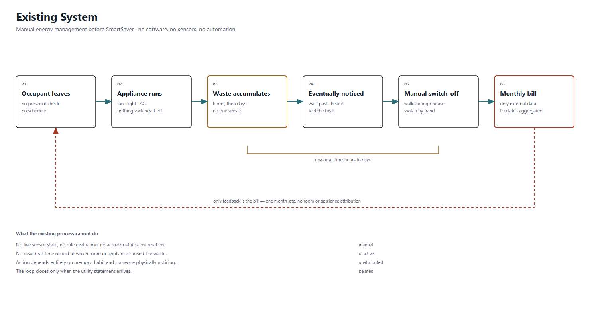
Proposed System
SmartSaver is an IoT-powered automated room energy management system designed to reduce electricity waste caused by appliances left running in unoccupied rooms. Its centre is a single Hub node, built on an ESP32 microcontroller, which reads a set of wired sensors directly — motion, temperature and humidity, and ambient light — maintains an authoritative clock, and communicates wirelessly over ESP-NOW with low-cost remote Wireless Modules. Each module is flashed with one capability, a relay for switching a load or a motion sensor for occupancy detection, and is discovered, paired and assigned an identifier by the Hub without any per-unit configuration. The household occupant configures automation rules, reviews live device state, pairs or removes modules, and issues manual overrides through the Hub's own web dashboard, while a separate History Server accumulates the event stream and reports savings over time.
All events are logged continuously, replacing the household's dependence on the monthly utility bill with an internal, near-real-time record of appliance activity and the savings attributable to it.
The relay is placed in line with the load, cutting power without requiring any replacement of the switch or outlet.
With SmartSaver in place, the household can expect a measurable reduction in electricity consumption by eliminating unnecessary appliance runtime, quantified in hours, kilowatt-hours and currency on the History Server dashboard. Response time to an avoidable condition drops from hours — the delay while waiting for someone to notice and walk through the house — to the immediate action of the rule engine. Human error is removed as a factor, because the system does not forget and does not depend on habit or awareness. Because the system is built on a hub-and-module architecture in which each module is independent and automatically discovered, additional rooms and appliances come under management by adding modules rather than by re-engineering the installation, and the actual savings achieved are reported back so the owner can verify the benefit rather than assume it.
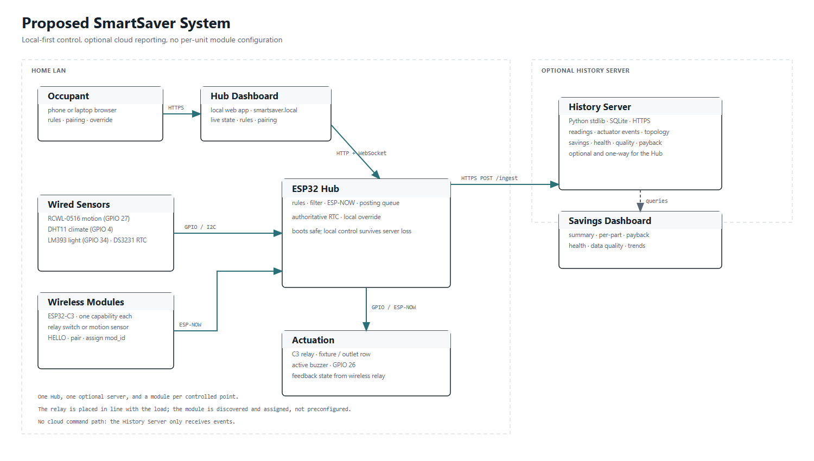
System Design
This section describes the overall design of the SmartSaver IoT-Based Energy Tracking and Monitoring System for the Home. It covers the system’s architecture, hardware integration, communication flow, and backend services. The design ensures that all components—sensors, actuators, microcontrollers, and software modules—operate together to provide real-time monitoring, automated control, and local household management.
Logical Specification
Data Flow Diagram
A Data Flow Diagram (DFD) is a visual representation that shows how information moves through a system, focusing on data flow rather than implementation details. At its core, a Level 0 DFD (context diagram) presents the entire system as a single process and shows its interaction with external entities, while deeper levels break processes into detailed subcomponents.
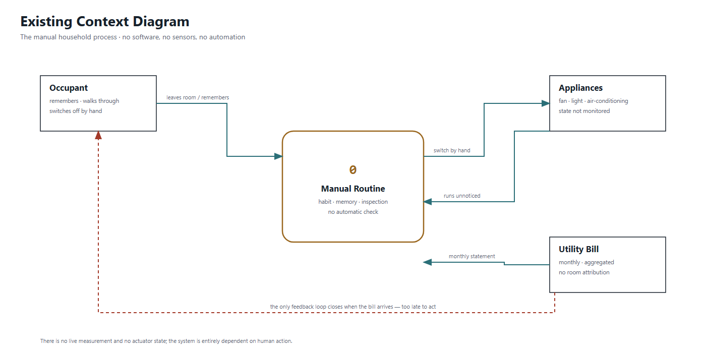
The Existing Context Diagram (Figure 2.4) depicts the purely manual process, in which household appliance management has no automated component at all. The occupants act on rooms directly, and the only recorded information flow is the utility provider's monthly billing statement. There is no sensing, no state reporting and no automated control, so the entire burden of avoiding waste falls on individual habit.
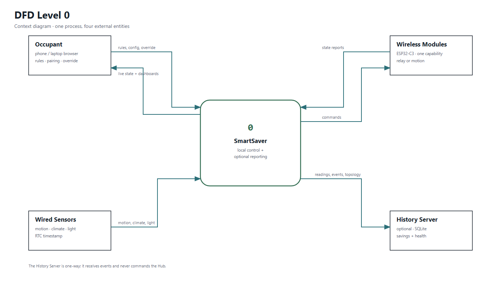
This proposed Level 0 Data Flow Diagram for SmartSaver provides a high-level view of how the system interacts with external entities. The central process is SmartSaver itself. It exchanges information with the household occupant, who configures automation rules, pairs and identifies modules, issues manual overrides, and reviews live device state through the Hub's dashboard. It interacts with the physical environment through its wired sensors and through remote Wireless Modules, receiving sensed conditions and actuator state reports and sending back switching commands. It also communicates outward with the History Server, to which it forwards readings, appliance transitions and topology changes, and from which nothing is required in return — the link is one-way by design so that an unavailable server can never impede local automation.
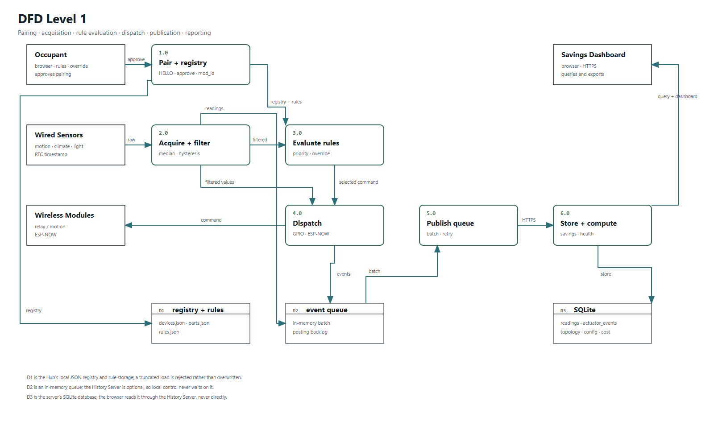
The Proposed Level 1 DFD decomposes SmartSaver into its implemented processes. Device Discovery and Pairing (1.0) accepts anonymous presence announcements from modules of unknown identity, records candidate modules, and on approval assigns an identifier and stores the module in the Device Registry. Sensor Acquisition and Filtering (2.0) samples the Hub's wired sensors on a fixed cadence and applies a median-and-hysteresis filter, producing a stabilised reading stream. Wireless Telemetry (3.0) receives ESP-NOW state reports from paired modules and folds them into the same reading stream. Rule Evaluation (4.0) reads the persisted rule set and the current state of every part, resolves any competition for the same target by priority, and emits at most one command per target. Command Dispatch (5.0) delivers each command to the appropriate actuator, locally for wired parts and over ESP-NOW for wireless modules, and receives the wireless relay's confirming state report in return. Event Publication (6.0) forwards every reading, appliance transition and topology change to the History Server when one is configured. Reporting and Analytics (7.0) runs on the History Server and turns the accumulated event stream into savings figures, per-appliance breakdowns, cost-of-ownership progress, trend charts and reliability indicators.
RDBMS ERD
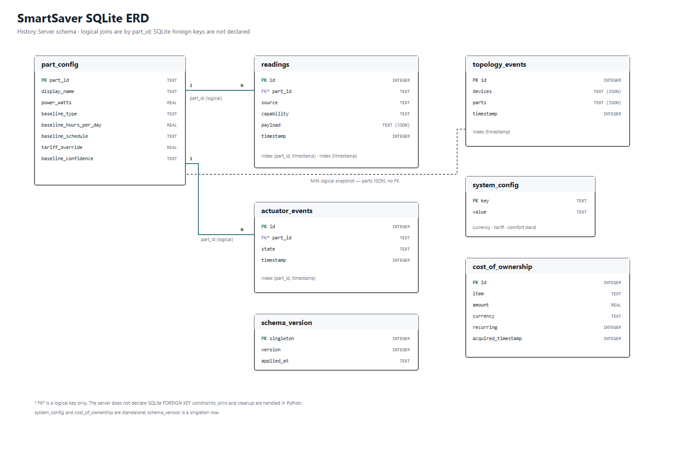
This Entity-Relationship Diagram describes the History Server's relational store, which is the system's system of record. The readings table holds every sensor reading and wireless state report with its part identity, source, capability, payload and timestamp, and the actuator_events table holds each appliance state transition, which is the input the savings model integrates. The topology_events table stores each snapshot of the paired device set and part list, so pairing and removal are visible over time. The part_config table carries the per-appliance savings parameters — power rating, baseline behaviour, baseline hours or schedule, an optional tariff override and a declared baseline confidence — while system_config holds system-wide settings such as currency and tariff rate. The cost_of_ownership table records the declared hardware and hosting costs used to compute payback progress. Every table is joined to the others through the part identifier supplied by the Hub, so a single appliance's configuration, activity history and computed savings remain consistent with one another.
On the household side, a home contains multiple rooms, and each room may host one or more of the system's parts, so a reading or state transition can always be traced back to the space it came from. Together these relationships create a clear framework for reporting consumption and savings per room and per appliance without duplicating data.
History Server Schema
Table 2.1 History Server Relational Schema
| id | part_id | source | capability | payload | timestamp |
|---|---|---|---|---|---|
| 1 | climate | wired | climate | {"temp_c": 27.5, "humidity_pct": 61.0} | 2026-05-06 10:00:00 |
| 2 | motion | wired | motion | {"state": "detected"} | 2026-05-06 10:00:05 |
| 3 | light | wired | light | {"state": "dark"} | 2026-05-06 10:00:10 |
| 4 | kitchen_relay | wireless | switch | {"state": "on"} | 2026-05-06 10:12:32 |
Physical Specification — Visual Table of Contents (VTOC)
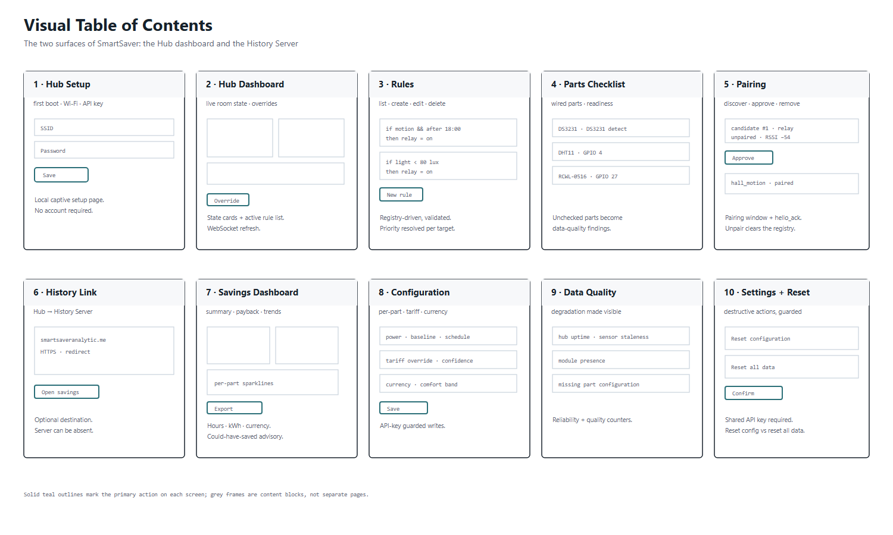
The SmartSaver navigation structure is organised under two interfaces. The Hub, served by the ESP32 itself, presents a Setup page for initial and revised configuration — Wi-Fi credentials, dashboard credentials, and an optional History Server address and shared key — reached through a captive portal on the Hub's own access point, and then a Dashboard with six navigation chips: Dashboard, Rules, Parts Checklist, Pairing, Settings and History. The first four are working views; Settings and History are disabled placeholder labels. The Dashboard shows the live part table with override controls; Rules provides the registry-driven rule editor and rule list; Parts Checklist declares the wired parts; and Pairing opens or closes the pairing window, lists candidate modules and approves one. The History Server presents a savings dashboard — a summary card, a system-health panel, a per-part breakdown with daily sparklines, an advisory could-have-saved panel, and sensor trend charts — together with a Configuration page holding per-part savings parameters, system settings such as currency and tariff, a Data Quality section listing any actuator still missing configuration, and a guarded Reset section. Reset configuration clears the per-part and system settings (including the cost list); Reset all data additionally clears readings, actuator events and topology snapshots. Both require the shared API key. The savings dashboard and the Configuration page link to each other directly. There is no separate user-management, reporting or analytics module.
There are no separate profile, password-recovery, activity-log or user-management pages.
User Interface Design
This is the Hub's captive-portal setup page, reached by joining the open SmartSaver-Setup access point and opening 192.168.4.1. It collects the home Wi-Fi SSID and password, the dashboard username and a password of at least eight characters, and optional History Server settings (base URL and shared API key). Saving the form writes config.json to LittleFS and reboots the Hub into normal mode. There is no email address, account creation, password-recovery flow or third-party sign-in.
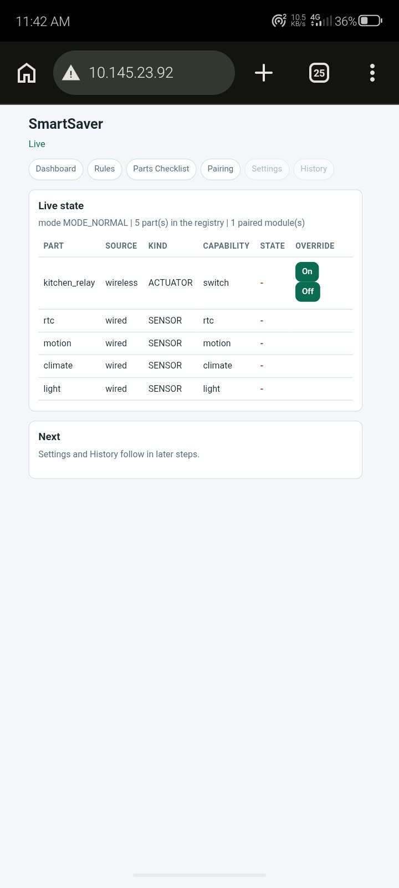
The Dashboard is the Hub's landing view after sign-in. Its header shows the live connection state, and a meta line reports the Hub mode, the number of registry parts and the number of paired modules. A row of navigation chips switches between Dashboard, Rules, Parts Checklist and Pairing; Settings and History are present as disabled placeholder labels. The live-state table has six columns — Part, Source, Kind, Capability, State and Override — and is updated over the dashboard WebSocket. Sensor rows show their reported state; actuator rows carry the manual-override controls. Because the Hub serves the page itself, the dashboard remains available on the local network even when the internet connection or the History Server is unavailable.
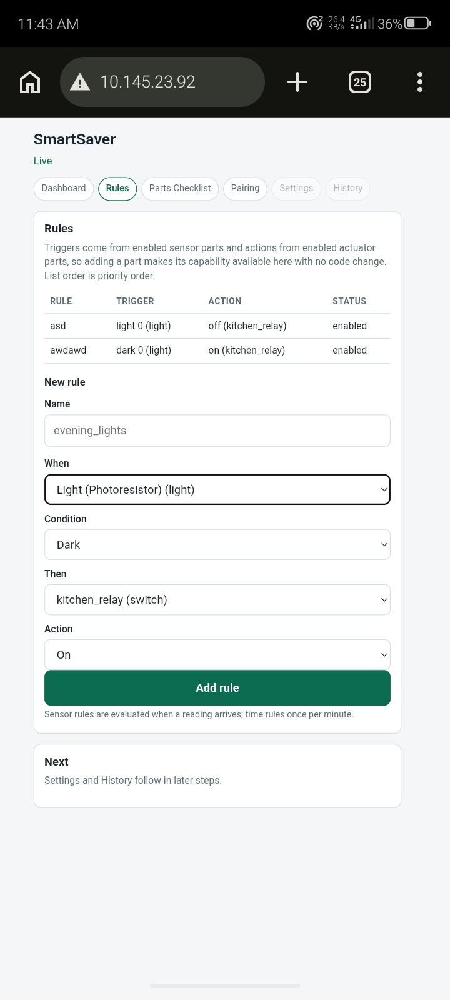
The Rules page has two parts. The rule table lists each rule's name, trigger, action and status; a disabled rule shows its reason in the Status column, and the list order is the priority order used when rules compete for the same target. Below it, the New Rule form collects a rule name, the trigger part ("When"), a capability-specific condition, an optional threshold with its unit, the action part ("Then") and the action command. The trigger and action dropdowns are generated from the enabled sensor and actuator parts in the registry, so a part added or enabled through the Checklist becomes available here without a firmware change.
The Pairing page controls wireless registration. It provides Open Pairing Window and Close buttons, a countdown for the 60-second window, and a candidate table with columns for the candidate number, module MAC, capability, a human-entered name and an Approve button. While the window is open, the Hub records each unpaired HELLO as a candidate; approving one assigns the identifier and persists the module, its MAC and its capability to devices.json. A separate Paired Modules list shows what is already registered. Wired parts are not handled here — they are declared on the Parts Checklist page. The registry that pairing writes is what the Rules page reads when it builds its trigger and action lists, so registration and automation configuration cannot disagree.
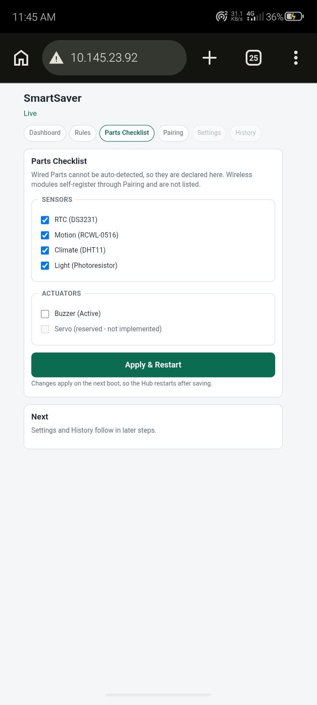
The Parts Checklist page is where wired parts are declared. It presents two groups — Sensors and Actuators — with a checkbox for each supported wired capability: the RTC, motion, climate and light sensors; the buzzer; and the reserved servo, which is shown but cannot be enabled. Wireless modules are deliberately absent because they self-register through pairing. Pressing Apply & Restart writes the checked set to parts.json and reboots the Hub, so the wired registry is rebuilt from that declaration on the next boot.

Manual override lives in the Override column of the live-state table, not on a separate page. Each actuator row carries On and Off buttons and a countdown label; pressing either sends the command and opens a ten-minute override window for that part. While the window is active, rules that target the same actuator are suppressed, and the dashboard recomputes the remaining time locally while the Hub re-sends it on each state push. Wireless actuators receive the command over ESP-NOW and report their resulting state back; the wired buzzer is open-loop. When the window expires, normal rule evaluation resumes automatically.
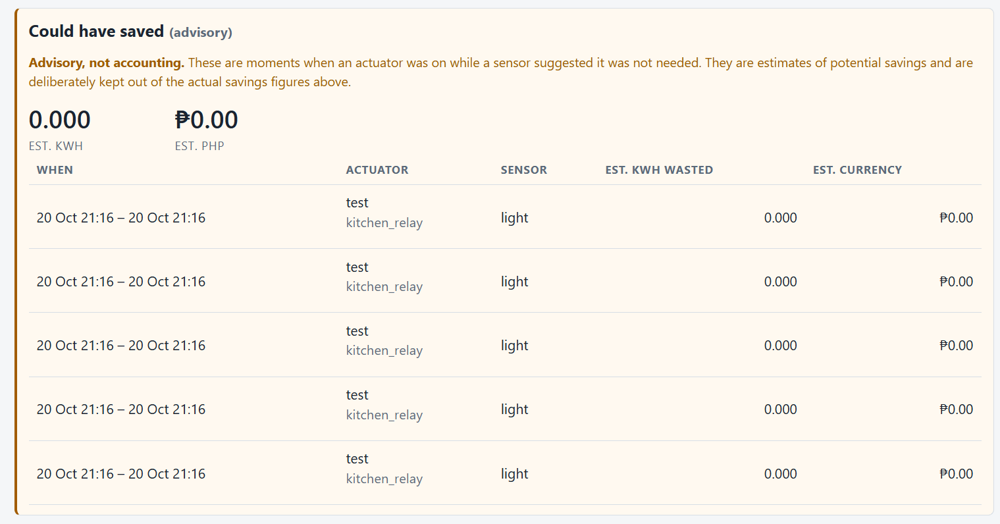
The History Server's savings and reporting views are generated from the stored event stream rather than from manual entry. The occupant can select a period — today, this week, this month or all recorded time — and see total kilowatt-hours and currency saved, a per-appliance breakdown with baseline hours, actual hours and daily savings sparklines, a payback-progress figure against the declared cost of the installation, and the system-health indicators covering hub uptime, sensor staleness and wireless module presence. A separate advisory panel lists moments when an appliance was running while a sensor suggested it was not needed, deliberately kept apart from the actual savings figures.
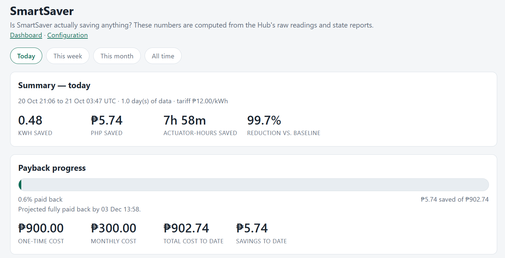
The savings dashboard also presents the derived indicators that make the figures interpretable. Savings trends are plotted over the selected period, sensor readings are charted so that temperature, humidity, motion activity and light level can be related to the automation that acted on them, and the per-appliance table ranks each controlled load by the savings it has produced, so the owner can see which appliances are worth automating and which are not. These views are read directly by the occupant rather than being distributed to other roles.
Software Development Tools
Website/Application Development
The Hub and module firmware were developed in the Arduino IDE 2 environment against the Espressif ESP32 board package, version 3.3.12, using the ESP32 Dev Module target for the Hub (partition scheme Minimal SPIFFS, 1.9 MB application / 128 KB filesystem) and the ESP32-C3 Dev Module target for the wireless modules (USB CDC On Boot enabled). The Hub's web interface is served directly by the microcontroller — a synchronous web server on the configuration access point and an asynchronous web server with a WebSocket for the dashboard — so no separate front-end build step, framework or bundler is involved; the interface is hand-written HTML, CSS and JavaScript held in the firmware as PROGMEM assets and served from flash. Firmware relies on the ESP-NOW, LittleFS, DNSServer, WebServer, ESPAsyncWebServer + AsyncTCP, HTTPClient, RTClib, and DHT sensor library with Adafruit Unified Sensor libraries. JSON is parsed and written by small purpose-built helpers rather than a JSON library. ESP-NOW is used unencrypted in this build: discovery relies on broadcast HELLO/hello_ack frames, and ESP-NOW cannot encrypt a multicast peer; the pre-shared and local master keys remain defined in the protocol header but are disabled. The module uses 1–11 channel-hop discovery in the verified build; a fixed Hub channel (11) is retained as a build-time fallback. The History Server is written in pure Python 3 using only the standard library, with no web framework or third-party package of any kind; it generates every chart as inline SVG on the server, which keeps the dashboard free of external scripts and CDN dependencies.
Database
The system uses SQLite as its only database, a single file-backed store accessed through Python's standard sqlite3 module. A relational schema holds readings, actuator state transitions, topology snapshots, per-part savings configuration, system settings and cost-of-ownership records, and a schema_version table drives an ordered migration runner so that schema changes can be applied without losing existing data. No separate time-series database is used: the volume and shape of the system's data — timestamped events queried by part and by period — are served adequately by indexed relational tables, which removes an entire service from the deployment. Wireless module identity is held on the Hub in a JSON file on LittleFS, and automation rules are held in a second such file, so both survive a reboot without a database engine.
Hosting / Server Environment
The History Server is deployed as a single shared cloud service on a DigitalOcean droplet running Ubuntu 24.04 (512 MB RAM / 1 vCPU / 10 GB disk, the $4/month plan) at http://68.183.227.6:8080. It runs as a systemd service under an unprivileged user, with UFW restricting the exposed port, and the Hub reaches it over HTTP using the shared API key on every ingest request. Because the server has no third-party dependencies, deployment is a file copy and a service start — no package installation, build step or virtual environment. There is one server for the deployment rather than one per Hub: a Hub only needs the base URL and key. Transport encryption is not implemented in this version and is recorded as a planned enhancement, so the deployment is intended for a trusted network.
Hardware Development Tools
- Arduino IDE 2 with the Espressif ESP32 board package 3.3.12, used to compile and upload both the Hub (ESP32 Dev Module) and the Wireless Module (ESP32-C3 Dev Module, USB CDC On Boot enabled).
- USB programming and power cables for the ESP32 and ESP32-C3 boards.
- Breadboard, 3.3 V/5 V supply rails and jumper wires for the low-voltage prototype assembly.
- Digital multimeter for continuity and voltage checks (sensor outputs, GPIO 26 buzzer drive, relay IN1/IN2 levels, common-ground verification).
- Commercially available off-the-shelf modules: ESP32 Dev Module, ESP32-C3 Dev Module, RCWL-0516 microwave motion sensor, DHT11 temperature/humidity sensor with a 10 kΩ pull-up, LM393 photoresistor comparator module, DS3231 real-time clock, active buzzer module, and a 2-channel 5 V relay board.
- A 12 V / 5 A AC PSU feeding a 12 V-to-5 V 10 A buck; the 5 V rail powers the ESP32 through its microUSB cable, the relay board, the buzzer and the RCWL-0516, while the ESP32 3V3 pin supplies the 3.3 V sensor rail. All grounds are common. No custom PCB is used. The AC outlet distribution shown in Figure 2.19 is an installation reference and was not energised in the prototype.
Hardware Specification
Table 2.2 Hardware and Software Specification
| Category | Component / Specification |
|---|---|
| Microcontrollers | ESP32 Dev Module (Hub) — dual-core, Wi-Fi and ESP-NOW; serves the embedded dashboard and runs the automation rule engine. Built with ESP32 core 3.3.12, partition scheme "Minimal SPIFFS (1.9 MB APP / 128 KB SPIFFS)". ESP32-C3 Dev Module (Wireless Module) — low-cost node flashed with one selectable capability (USB CDC On Boot enabled). |
| Wired Sensors | RCWL-0516 microwave motion sensor (GPIO 27, 5 V, digital HIGH = detected); DHT11 temperature and humidity sensor (GPIO 4, 10 kΩ pull-up on DATA); LM393 photoresistor comparator module read digitally from its DO pin (GPIO 34; the module's trimpot sets the light/dark threshold). |
| Real-Time Clock | DS3231 RTC on I2C (SDA 21, SCL 22), with backup cell. Supplies the authoritative timestamp and the reference for time-based automation rules; serial rtc set seeds it from the firmware build time when the cell has lost power. |
| Wired Actuator | Active buzzer module (VCC / I-O / GND) on GPIO 26, driven by a steady HIGH; supports on, off, short-beep and long-beep commands. |
| Power | AC PSU (12 V / 5 A) → 12 V-to-5 V buck (10 A rail) → microUSB → ESP32. The 5 V rail also feeds the RCWL-0516, buzzer and relay board; the ESP32 3V3 pin supplies the DS3231, DHT11 and LM393 sensor rail. All grounds are common. |
| Wireless Sensing | RCWL-0516 microwave motion sensor on the ESP32-C3 (VIN 5 V, OUT = GPIO 3, common ground); transmit-only — it reports detected / clear and never parses a command. |
| Wireless Actuation | Dual-channel 5 V relay module: IN1 = GPIO 3, IN2 = GPIO 4, both channels driven together from the single switch state, normally-open contacts, active HIGH, boots OFF. Single-channel fixture variant: IN = GPIO 3, GPIO 4 unused, COM/NO in the fixture lead. Both variants report their resulting state back to the Hub. |
| AC Distribution | 1-in-2-out splitter for L/N/PE; CH1 switches live, CH2 switches neutral, six outlets wired in parallel, protective earth bonded and not switched. A separate charger branch feeds the ESP32-C3 over USB-C. Installation reference only; the prototype's mains section was not energised. |
| Communication | ESP-NOW on 2.4 GHz between the Hub and its modules, unencrypted in this build (broadcast discovery cannot be encrypted); the verified build uses 1–11 channel-hop discovery, with a fixed channel (11) retained as a fallback. HTTPS over Wi-Fi between the Hub and the History Server, authenticated by a shared X-API-Key header. |
| Software (Firmware) | Arduino IDE 2 with the Espressif ESP32 board package 3.3.12. ESP-NOW, LittleFS, DNSServer, WebServer, ESPAsyncWebServer + AsyncTCP, HTTPClient, RTClib, DHT sensor library + Adafruit Unified Sensor. Hand-written HTML/CSS/JS served from flash; no frontend framework and no JSON library. |
| Software (Server) | Python 3 standard library only — no framework or third-party package. SQLite for storage with an ordered migration runner. Charts generated server-side as inline SVG. Deployed on a DigitalOcean droplet (Ubuntu 24.04) as a systemd service. |
Figures 2.17–2.21 document the as-built wiring for the Hub and each hardware variant. The Hub and module sheets are low-voltage references; the AC distribution sheet is an installation reference and was not energised as part of the prototype.
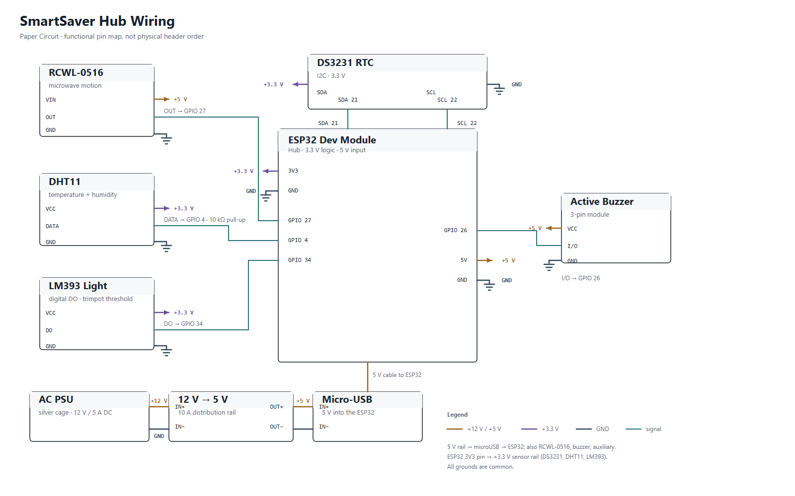
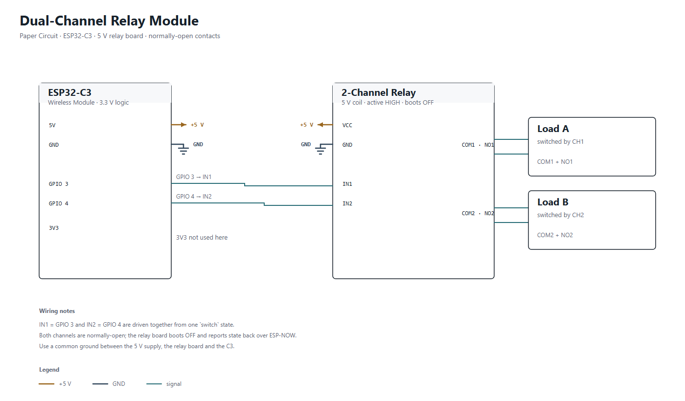
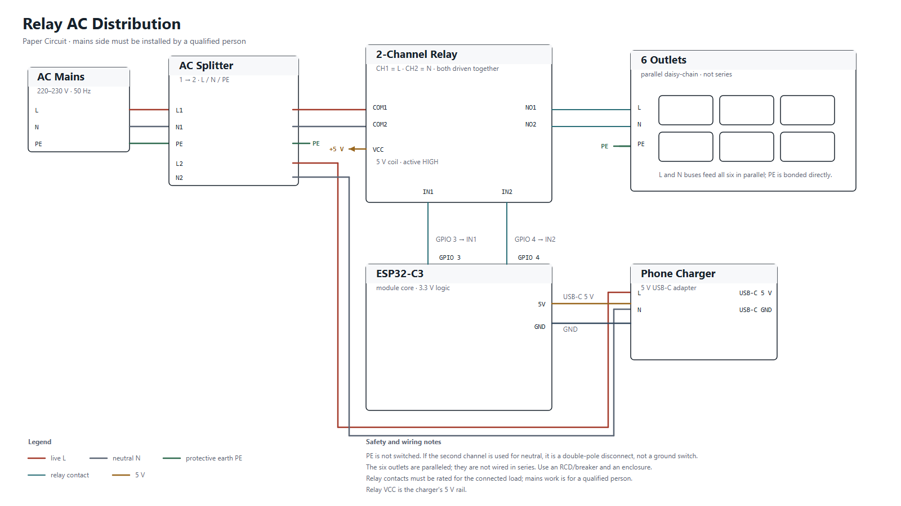
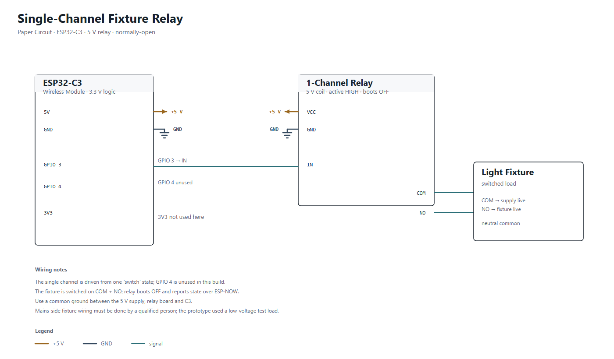
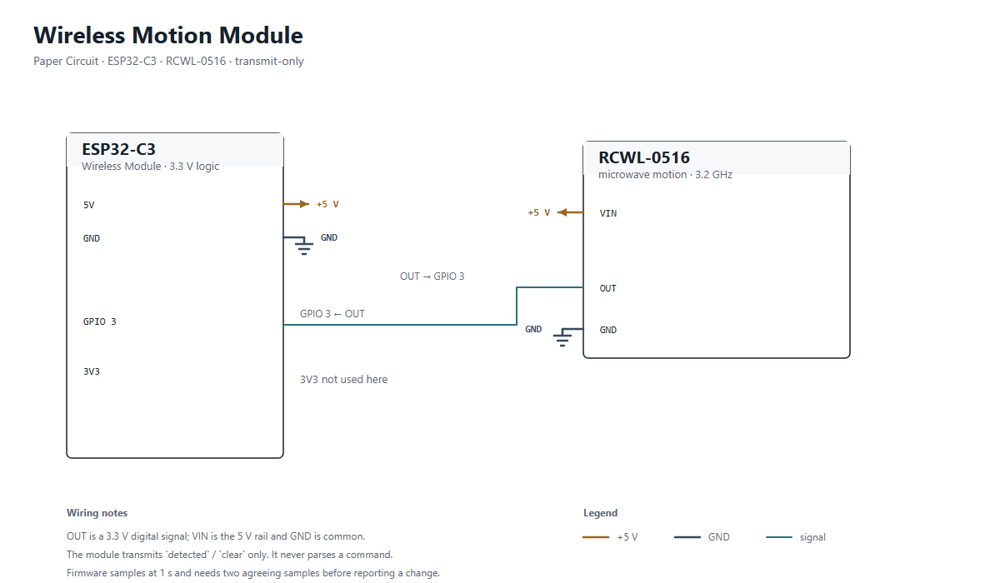
System Testing
The system testing phase involves a multi-layered verification process to ensure that SmartSaver performs reliably across all hardware and software components. Testing is conducted in the following distinct stages.
Unit Testing
Unit testing is conducted on individual hardware components in isolation. The RCWL-0516 motion sensor is tested for detection and release within its range; the DHT11 for plausible temperature and humidity values against a reference thermometer; the LM393 comparator module for a dark/light transition when its photoresistor is covered; the DS3231 for a correct and persistent time reading; and the relay module for switching both channels together and reporting its resulting state.
The sensor filter is verified by presenting a deliberately noisy sequence and confirming that a single spurious sample does not propagate to the rule engine or retrigger a rule on an unchanged value. On the wireless side, a module is tested for correct 1–11 hop discovery (and for fixed-channel startup where that fallback is enabled), successful pairing, command acceptance and state reporting. The active buzzer's command path is exercised across on, off, short-beep and long-beep; the bench module itself did not sound, and that remains an open hardware item.
Integration Testing
Integration testing is designed to verify that the components function correctly as a connected system. The plan covers each wireless module locating the Hub, being recorded as a candidate and — once approved — receiving an identity that persists across a Hub reboot. It also covers the end-to-end control path: a rule trigger, the command reaching the target actuator, the wireless relay's confirming state report returning to the Hub, and the resulting event reaching the History Server and appearing on both dashboards when one is configured. The offline case is covered by making the History Server unreachable and confirming that local automation continues unaffected, since that link is deliberately one-way.
System Testing
System testing is designed to validate the end-to-end behaviour of SmartSaver under realistic operating conditions. The plan covers time-triggered rules, set through the RTC and observed at the configured minute; sensor-triggered rules, including the requirement that a condition clearing within the filter's hysteresis window does not cause spurious actuation; priority behaviour with overlapping rules against a single appliance; manual override, both its effect and its expiry; and the savings computation against hand-worked examples for each baseline type.
User Acceptance Testing (UAT)
User Acceptance Testing will be conducted with the people who will actually live with the system: the household occupants, together with a small number of non-occupants who evaluate it for usability. The occupants will be assessed on whether the system reduces the effort they spend managing appliances, whether the automation rules they configured behave as they expected, and whether they can interpret the savings and system-health information without assistance. Non-occupant respondents will be assessed on how easily they can complete initial configuration through the Hub's captive portal, build and adjust a rule from the registry-driven editor, pair a new module, apply a manual override, and understand what the savings dashboard is telling them. Respondents will also be asked to identify a module that has stopped reporting and to distinguish a stale sensor from a failed actuator, since those are the conditions the reliability panel is intended to surface.
Bug Fixing and Refinement
Any defects, inaccuracies or timing issues identified across the unit, integration, system and UAT stages are documented and addressed through the iterative feedback loop of the Iterative Waterfall methodology. Hardware-level issues such as sensor miscalibration, unreliable radio channel configuration or pairing, or incorrect actuation behaviour are corrected at the firmware level before re-testing. Software-level issues such as incorrect rule logic, priority conflicts, dashboard display errors or reporting inaccuracies are corrected on the Hub or on the History Server as appropriate and re-validated. This refinement cycle continues until all components meet the functional and performance requirements established during the requirements analysis phase.
Development and Testing Timeline
The development phases and test stages above were executed as a sequence of incremental build-and-test cycles rather than as a single uninterrupted pass. Figure 2.22 records the actual development and testing milestones — from the initial requirements and scaffold, through the firmware, pairing, History Server and dashboard increments, to the final motion, buzzer and artifact checks. The dates are build-log milestones rather than a complete calendar: testing continued within each development cycle, and several increments were revisited after their first verification.
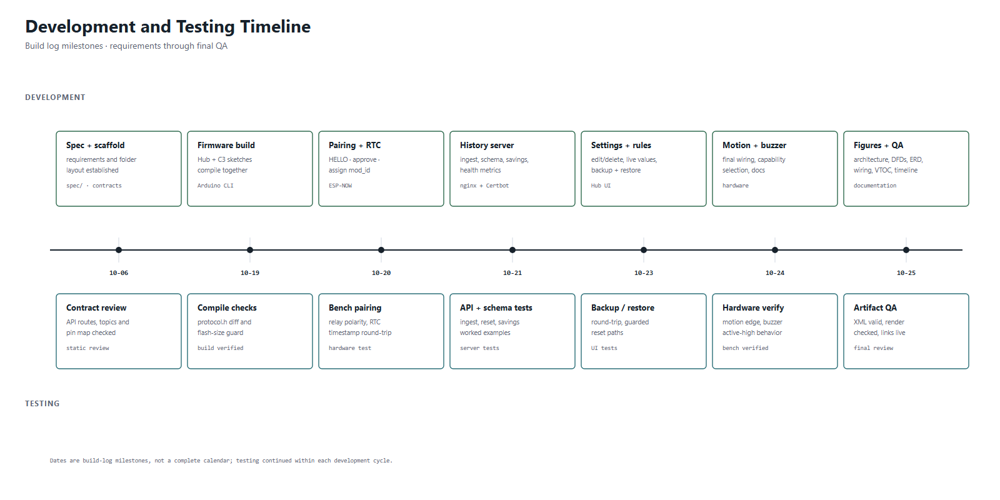
Verification, Validation and Testing
To ensure the quality of SmartSaver, the system should be evaluated using the ISO/IEC 25010:2023 Software Quality Model. This internationally recognized standard provides a structured framework for assessing software quality through eight key characteristics.
Functional Suitability defines the degree to which the system provides functions that meet the stated and implied needs of its users. For SmartSaver this covers whether the system correctly performs sensor acquisition and filtering, module discovery and pairing, rule-based automated control with priority resolution, manual override, actuator state confirmation, live device monitoring, and savings reporting as defined in the requirements.
Performance Efficiency pertains to the system's resource usage relative to the conditions under which it operates. This is evaluated in terms of how quickly SmartSaver responds to a satisfied trigger condition — from sensor evaluation to the dispatch of the actuator command — how promptly a module confirms its resulting state, and how efficiently the Hub continues to sample sensors, evaluate rules and serve its dashboard concurrently. On the History Server it covers the time taken to ingest the event stream and to compute savings and health metrics as the volume of stored events grows.
Usability assesses how effectively and satisfactorily users can operate the system. For SmartSaver this includes how easily an ordinary household occupant with no technical background can complete initial configuration through the Hub's captive portal, navigate the dashboard, build and adjust automation rules from the registry-driven editor, pair a new module, apply a manual override, and interpret the savings and system-health information on the History Server.
Reliability refers to the system's ability to perform its required functions under defined conditions over a period of time. SmartSaver's reliability is evaluated on the consistency of sensor readings under the filtering stage, the Hub's ability to continue automating when the History Server is unreachable, the correctness of actuator state confirmation, and the system's ability to tolerate a wireless module going out of range or losing power without disturbing the rest of the installation. The History Server contributes directly to this evaluation by reporting Hub uptime, sensor staleness, wireless module presence and the proportion of actuators still missing configuration, so that silent degradation becomes visible.
Security covers the system's ability to protect data and prevent unauthorised access. SmartSaver is evaluated on its password-protected dashboard session on the Hub, on the shared API key that authenticates the Hub to the History Server, and on the integrity of the event data held in the server's relational store. ESP-NOW traffic is unencrypted in this build because broadcast discovery frames cannot be encrypted; the pre-shared and local master keys remain defined but disabled, and this is recorded as a limitation of the current version. The absence of transport encryption between the Hub and the server is likewise recorded explicitly as a limitation rather than presented as a security property.
Reliability also covers how reliably the ESP32 nodes communicate with the backend across the home's existing Wi-Fi network, including when the router restarts or a module is moved between rooms.
Maintainability pertains to the ease with which the system can be modified, corrected or improved. SmartSaver is evaluated on the modularity of its firmware and server code, on the clarity of its database schema and its ordered migration mechanism, on the separation between the Hub's device-facing logic and the History Server's reporting logic, and on how straightforwardly a developer can add a new capability, a new automation trigger or a new metric without disturbing the rest of the system.
Portability refers to the system's ability to be transferred from one environment to another. For SmartSaver this covers whether the History Server can be migrated to a different cloud host or run on local hardware, which its lack of third-party dependencies and single file-backed database make straightforward, and whether the Hub and module firmware can be redeployed against a different room layout or module mix without changing the core logic. Because a module's behaviour is selected by a single compile-time capability setting and its identity is assigned at pairing time rather than stored in the hardware, the same board can be repurposed by reflashing it.
System Implementation
This section outlines how the SmartSaver power tracking, monitoring and automated control system is introduced and deployed in a household. It details the installation process, configuration of system components, and orientation of the occupants to ensure proper operation. The implementation also addresses the procedures followed during rollout to achieve protected access, reliable monitoring and effective automated control.
Deployment Strategy
SmartSaver should be deployed using a phased approach that avoids disturbing the household's daily routine and allows iterative validation before the whole home is covered. Installation should begin with a single room in which the Hub, its wired sensors and one or more Wireless Modules are installed and tested under real conditions. Each module should be flashed with the capability it is intended to provide, powered and allowed to start on its configured radio channel and announce itself, then paired and identified through the Hub's Pairing page. Automation rules appropriate to that room should be configured through the Rules page and checked against the room's actual daily pattern before the History Server is brought into the loop. Once the first room demonstrates reliable sensing, correct rule behaviour and accurate savings reporting, the installation should be extended to the remaining rooms by adding modules rather than by re-engineering the setup. The History Server should be hosted on a DigitalOcean cloud VPS as described in the deployment guide, with its shared API key configured on both the server and the Hub before the two are connected.
User Orientation and Training
Before the full rollout, an orientation session should be conducted with the household occupants so that they can operate the system confidently. They should be shown how to navigate the Hub dashboard and interpret live device state, how to configure and adjust automation rules from the registry-driven editor, how to pair a new module, and how to apply or release a manual override when automation needs to be suspended temporarily — for example while hosting guests or during an appliance repair. They should also be shown how to read the History Server's savings figures and its system-health indicators, and how to recognise a module that has stopped reporting so that it can be re-paired or replaced.
Rollout Procedures
The full rollout should follow the implementation timeline outlined in Table 2.3. Hardware installation should proceed room by room under researcher supervision, with each module validated for correct sensor readings and actuation response before being marked active in the system. Because the system is intended for a single household, no user-account or role provisioning step is required: the occupant sets the dashboard credentials during initial configuration. A monitoring period should follow the completion of installation during which the researchers observe system behaviour, confirm that automated actions are being correctly logged and attributed as savings, and address any firmware or configuration issues surfaced by live operation. The TAM and ISO/IEC 25010:2023 evaluation instruments should be administered to respondents at the conclusion of this monitoring period.
Implementation Plan
The implementation plan outlines the strategies for deploying and using the SmartSaver power tracking, monitoring and automated control system in a household, detailing the project delivery approach. It covers the installation of hardware components, configuration of software modules, and orientation of the occupants. The detailed strategies below are intended to ensure effective adoption and successful operation of the system.
Table 2.3 Implementation Plan
| Strategy | Activities | Person(s) Involved | Duration |
|---|---|---|---|
| Hub and sensor rollout | Install the Hub with its wired sensors, power it, and confirm every wired part reports. Configure Wi-Fi and dashboard credentials through the captive-portal setup page. | Researchers | Week 1–2 |
| Module flashing and pairing | Flash each Wireless Module with its intended capability, power it, let it start on its configured channel and announce itself, then approve it through the Pairing page and confirm its identity persists. | Researchers | Week 2–3 |
| Server deployment and rule configuration | Deploy the History Server on a DigitalOcean droplet, configure the shared API key on both sides, then build the automation rules for each room through the Rules page. | Researchers | Week 3–4 |
| User orientation and training | Train the household occupants on the dashboard, rule editing, pairing and manual override, including how to recognise a module that has stopped reporting. | Researchers, household occupant | Week 4–5 |
| Full rollout and monitoring | Extend to the remaining target rooms by adding modules. Monitor rule behaviour, actuator state confirmation, and the History Server's reliability and data-quality indicators. | Researchers, household occupant | Week 5–6 |
| Evaluation | Administer the TAM and ISO/IEC 25010:2023 evaluation instruments to respondents and analyse the results. | Researchers | Week 6–7 |
Respondents and Setting of the Study
Respondents and Sampling Technique
The respondents of this study are the occupants of the target household, together with a small group of non-occupant participants who evaluate the system for usability. The study utilises Purposive Sampling, a non-probability technique where respondents are selected because they possess particular characteristics or knowledge relevant to the study (Black, 2010). This ensures that data regarding the existing manual practice and the system's feature requirements comes from individuals with firsthand experience of the household's daily energy consumption and appliance-management habits.
Since the study employs purposive sampling, respondents are selected based on the following inclusion criteria:
Must be an occupant of the target household, or a non-occupant participant recruited for usability evaluation.
Must have regular daily access to, or responsibility for, rooms equipped with electrical appliances.
Must have observed or experienced challenges regarding electricity waste or the management of appliances left running in empty rooms.
Must be willing to participate in the evaluation of a technology-based automated system.
Table 2.4 Respondent Distribution by End-User Type
| End-Users / Respondent Group | Number of Respondents |
|---|---|
| Household occupants | 7 |
| Non-occupant usability respondents | 12 |
| TOTAL | 19 |
Setting of the Study
The study will be situated within the target household. This setting is chosen because it provides a controlled, familiar environment with a realistic mix of electrical loads — lighting, fans, air-conditioning units and entertainment equipment — that are frequently used inefficiently through human oversight. Conducting the study in this location allows the researchers to observe the existing manual practice directly and to calibrate the SmartSaver installation to the home's actual layout and wiring. This setting is essential for validating the system's core premise: that rule-based automated control, driven by live sensing rather than by human memory, captures and eliminates the small, overlooked inefficiencies that accumulate into a significant share of a household's electricity cost.
Instrument and Validation
The research instruments used in this study are two originally designed closed-item questionnaires. The ISO/IEC 25010:2023 expert instrument asks qualified evaluators to rate 46 statements covering Functional Suitability, Performance Efficiency, Reliability, Usability, Security, Compatibility, Maintainability and Portability, plus one overall statement, on a four-point scale (4 Excellent, 3 Good, 2 Fair, 1 Poor) with no neutral midpoint. The TAM user instrument records only the respondent's name in Part I, then Part II's nine feature-prioritisation items and Part III's acceptance statements — eight Perceived Usefulness, eight Perceived Ease of Use, and four Attitude/Intention items — on a four-point agreement scale (4 Strongly Agree, 3 Agree, 2 Disagree, 1 Strongly Disagree), also with no neutral midpoint. Both instruments use closed items only; there are no open-ended questions or comment fields.
To ensure accuracy and relevance, both instruments will undergo content validation by field experts including a business analyst and an IT professional with IoT systems experience. Pilot testing will be conducted with approximately 20 samples, and Cronbach’s Alpha will be calculated to ensure reliability, with an acceptable threshold of 0.70 or above.
Research Design
The study employs a mixed-method, descriptive-developmental research design. The developmental component involves the design, construction, and deployment of the SmartSaver hardware-software system. The descriptive quantitative component involves the collection and statistical analysis of TAM and ISO/IEC 25010:2023 evaluation survey data to measure user acceptance and system quality. Qualitative data from the initial household interview and researcher observations complement the quantitative findings, providing contextual insight into existing practice and the installation environment.
Data Gathering
Permission was formally obtained from the household through a written request letter endorsed by the CCS Office. An initial interview was conducted with the occupants to gather baseline information on the existing manual practice, and the researchers observed the home's appliance-use pattern over a short period. Informed consent was obtained from all participants prior to their involvement. The two instruments were administered to the selected respondents who met the inclusion criteria. After collection, the completed instruments were reviewed for completeness, encoded and prepared for statistical analysis.
Statistical Treatment of Data
The study will utilize a four-point Likert scale. The weighted arithmetic mean formula is used:
μ = (Σfx) / n
Where: μ = mean | Σfx = sum of (frequency × weight) | n = total number of respondents
Table 2.5 TAM Evaluation Scale
| Mean Range | TAM Interpretation |
|---|---|
| 3.26 – 4.00 | Strongly Agree |
| 2.51 – 3.25 | Agree |
| 1.76 – 2.50 | Disagree |
| 1.00 – 1.75 | Strongly Disagree |
Table 2.6 ISO/IEC 25010:2023 Evaluation Scale
| Mean Range | ISO/IEC 25010:2023 Interpretation |
|---|---|
| 3.26 – 4.00 | Excellent |
| 2.51 – 3.25 | Good |
| 1.76 – 2.50 | Fair |
| 1.00 – 1.75 | Poor |
Ethical Considerations
The conduct of this research is guided by established ethical principles to ensure the protection of all human participants and the integrity of the data gathered, especially given the mixed-method nature of the study and the physical nature of IoT hardware installation.
Ethical Approval
Before any data collection or hardware installation commenced, the researchers secured formal permission from the household and, where the property is not owner-occupied, from the property owner. This process involved presenting the project's objectives and the technical safety of the ESP32-based hardware. The system operates at low voltage in its prototype form: sensing is non-invasive, and switching is demonstrated on low-voltage test loads, so no modification is made to the home's fixed electrical installation. Securing this permission ensures that the prototype does not interfere with the household's normal use of its appliances or with any safety requirement of the property.
Informed Consent
A formal letter requesting permission to conduct interviews and hardware installation was prepared and endorsed by the CCS Office, and countersigned by the household. All participants — including the occupants and the non-occupant usability respondents — were provided an informed consent form prior to their involvement, clearly outlining the purpose of the study, the nature of their participation, and their right to withdraw at any time without penalty.
Privacy and Confidentiality
Recorded interview data will contain only the occupation of the interviewee and not their name. All TAM and ISO evaluation survey results are reported in aggregate form to prevent individual identification. Energy consumption data collected by the system is used exclusively for research purposes.
Minimization of Harm
If the prototype is subsequently extended to switch an appliance from the household's mains supply
Fair and Equitable Participation
Respondent selection is guided by the stated inclusion criteria applied consistently across all eligible participants. No participant is excluded on the basis of personal characteristics unrelated to the study’s scope.
Responsible Data Handling and Disposal
Physical instruments will be shredded or returned to the researchers upon completion of the study.
References
Working bibliography for SmartSaver.md. Citations match the author–year entries used in the paper. Entries marked † still need their full publication details completed from the original source; they were not invented here.
- Bashir, M., et al. (2024). [Study on energy consumption in school buildings and its economic, social, and environmental implications.] † [Journal, volume(issue), pages, DOI — complete from source.]
- Black, K. (2010). Business statistics: Contemporary decision making (6th ed.). Wiley.
- Davis, F. D. (1989). Perceived usefulness, perceived ease of use, and user acceptance of information technology. MIS Quarterly, 13(3), 319–340.
- Grenze researchers. (2025). [Real-time energy monitoring and automation system using an ESP32, ACS712 current sensor, and PIR occupancy detection.] † [Corporate/group author and publication details — verify and complete from source.]
- Kalinga, T., et al. (2023). Cognitive internet of things-based framework for efficient consumption of electrical energy in public higher learning institutions. † [Journal, volume(issue), pages, DOI — complete from source.]
- Kaur, R., et al. (2024). [Remote-controlled appliance system using infrared communication.] † [Journal/conference, volume, pages, DOI — complete from source.]
- Leong, W. D., et al. (2024). [Occupant behaviour and energy wastage in intermittently occupied rooms.] † [Journal, volume(issue), pages, DOI — complete from source.]
- Moreno, J., et al. (2022). Toward an intelligent campus: IoT platform for remote monitoring and control of smart buildings. † [Journal, volume(issue), pages, DOI — complete from source.]
- Ogata, K. (2010). Modern control engineering (5th ed.). Pearson.
- Patel, R. (2015). When I say … aggregation of marginal gains. Medical Education, 49(11), 1065–1066.
- Pelaez, M., et al. (2025). [Energy consumption and operational efficiency in a Philippine school division.] † [Journal/report, volume, pages, DOI or URL — complete from source.]
- Ritchie, H., Roser, M., & Rosado, P. (2023). Energy. Our World in Data. https://ourworldindata.org/energy
- Shokrollahi, A., et al. (2024). [Review of PIR sensor technology for occupancy detection, 2015–2023.] † [Journal, volume(issue), pages, DOI — complete from source.]
- Shrivastav, A. (2021). [ESP32-based home automation with infrared remote control, relay switching, and manual control.] † [Journal/conference, volume, pages, DOI — complete from source.]
- Steele, K., & Stefánsson, H. O. (2023). Decision theory. In E. N. Zalta & U. Nodelman (Eds.), The Stanford encyclopedia of philosophy. † [Confirm the 2023 edition/URL.]